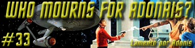
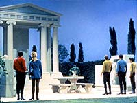
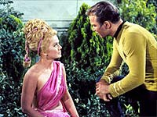
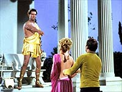
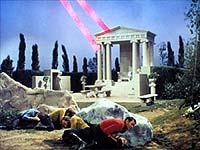
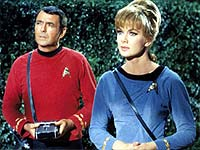
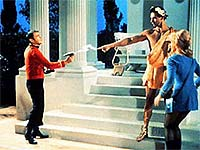

|
Srie
Clssica
Temporada 2

Anlise do episdio por
Carlos
Santos


| MANCHETE
DO EPISDIO Data Estelar: 3468.1 A Enterprise encontra-se pesquisando o planeta Pollux IV, quando subitamente um campo de energia na forma de uma mo humana envolve a nave, deixando-a imobilizada. Aps algumas tentativas inteis de libertar-se, um novo fenmeno aparece na tela da ponte. Desta vez um rosto, tambm de aparncia humana. Uhura identifica um sinal de udio que aparentemente proveniente da mesma fonte da imagem que ocupa a tela da ponte. O ser faz um discurso sobre eras passadas e sobre profecias, referindo-se tripulao das naves como "crianas". Kirk pergunta se ele o responsvel pela imobilizao da nave, e recebe um sim como resposta, o que o deixa ainda mais irritado.  Um grupo de desembarque formado por Kirk, McCoy, Scott, Chekov e a tenente Carolyn Palamas teletransportado ao planeta, onde encontra uma estrutura similar arquitetura greco-romana terrestre. L encontram tambm seu anfitrio, que continua falando por metforas at declarar ser o deus grego Apollo, e que esteve na Terra h cinco mil anos. Kirk pergunta quais as intenes de Apollo, e ele responde que o grupo no deixar mais aquele planeta, e que eles devero ficar para ador-lo. Kirk tenta fazer contato com a nave, mas percebe que o comunicador no funciona, por obra de Apollo. Kirk obviamente se enfurece e confronta o ser que afirma ser Apollo, mas ele, como mostra de seu poder, aumenta seu prprio tamanho vrias vezes, impressionando o grupo. Enquanto isso, Spock, a bordo da nave, tenta descobrir algumas respostas, ou pelo menos restabelecer o contato com o grupo avanado, sem muito sucesso. Em terra, Palamas d a Kirk alguma informao a respeito do deus grego Apolo. McCoy acrescenta que Apollo, ao menos para as leituras do tricorder, parece humano. Eles especulam que deve haver algum tipo de tecnologia poderosa sendo controlada por Apollo, que lhe permitiria executar seus truques, e Kirk manda que todos procurem por sua fonte de fora.  Palamas questiona Apollo, porm este parece mais interessado em cortej-la do que em ouvi-la. Tal comportamento irrita Scott, que tenta sacar seu feiser contra ele, inutilmente, pois com um gesto da mo, Apollo inutiliza todas as armas do grupo. Ele se volta novamente para Palamas, e com um gesto faz com que seu uniforme se transforme em vestido no estilo grego, o que a princpio impressiona a tenente. Ambos deixam o local. Scott acorda meio tonto, e preocupado com Palamas, mas Kirk imediatamente chama a ateno de seu oficial, ordenando que ele prossiga com seu trabalho. Ele se vai, e Kirk e McCoy passam a especular sobre Apollo. Kirk acredita que ele tenha feito parte de um grupo de viajantes espaciais que h 5.000 anos teria chegado Terra e teria sido tomado por deuses pelos ento primitivos habitantes do planeta. A bordo da Enterprise, Spock e a tripulao continuam tentando se livrar do campo de fora, sem sucesso. Uhura tenta restaurar as comunicaes enquanto os sensores conseguem identificar o grupo de descida. Sulu localiza uma fonte de energia no planeta, mas no consegue muitas informaes sobre ela. Em Pollux, Apollo passeia com Palamas, que se mostra encantada com a beleza do lugar, assim como ele parece encantado com ela. Ela pergunta sobre os outros "deuses", e Apollo responde que retornaram ao "Cosmos". Palamas pensa que isto significa que os outros teriam morrido, mas Apollo diz que no, pois seu povo imortal. Ele reclama que na Terra as pessoas mudaram e eles (os deuses) viraram apenas lembranas, e que eles precisam ser adorados para existirem. Palamas pergunta se ele acredita realmente ser um deus, e Apollo diz que sim, que eles tem o poder da vida e da morte, que poderiam ter deixado o Olimpo (Provvel referencia ao lugar onde viviam na Terra) e destruir tudo, mas que eles no queriam destruir e por isso escolheram voltar a seu lugar de origem, mas que foi difcil se readaptar sem seus adoradores, e muitos no resistiram. Apollo, entretanto, acreditava que um dia o povo da Terra chegaria ao espao e a ele novamente. Ele declara ainda ter escolhido Palamas para ser sua companheira, e a beija.  Neste momento, Apollo reaparece sem Palamas, sobre o que questionado por Kirk. Como o "deus" no faz a menor questo de responder, Scott mais uma vez se irrita e tenta atac-lo, mas a reao de Apollo desta vez mais violenta, deixando o engenheiro inconsciente. Ao ver Scott ferido, Kirk tambm reage, mas Apollo usa seu poder, quase asfixiando o capito da Enterprise, e depois desaparece. Quando Kirk se recupera, Chekov diz a ele ter notado que Apollo parecia cansado quando desapareceu. Scott tambm acorda, mas seu brao est imobilizado. Eles se renem e, com base nas especulaes de Kirk e nas observaes de Chekov, concluem que Apollo precisa descansar quando usa muita energia. Kirk planeja forar Apollo novamente para que ele ataque um dos membros do grupo, dando aos outros a chance de contra-atacar, mesmo que isso custe a vida de algum. A bordo da nave, Uhura continua trabalhando em uma forma de fazer contato com o grupo avanado. Sulu prossegue com a varredura e Spock trabalha em uma forma de atravessar o campo de fora para disparar as armas, se possvel, tarefa compartilhada como o tenente Kyle. Em terra, Apollo retorna, trazendo Palamas e ameaando Kirk e seu grupo novamente. O capito da Enterprise mais uma vez tenta argumentar com ele, mas nada parece modificar sua inteno de fazer do grupo da Federao seus novos sditos. Eles pem ento em pratica o plano de irritar Apollo, mas quando ele est prestes a atacar Kirk, Palamas se interpe entre eles e intercede por Kirk, fazendo com que este volte atrs, para frustrao do capito. Agora Apollo ordena que Kirk faa com que o resto da tripulao desa, abandonando a nave, e mais uma vez desaparece. Kirk agora passa a depositar suas fichas na lealdade de Palamas, cada vez mais envolvida pelo angustiado Apollo e suas promessas, ainda transtornado por no entender por que os humanos se negam a vener-lo.  Uhura termina as modificaes no sistema de comunicaes da nave, permitindo a Spock fazer contato com seu capito. O Vulcano informa ter descoberto uma fonte de fora responsvel pelo campo de fora, que exatamente a estrutura que forma o templo de Apollo. Spock diz poder disparar contra a estrutura pelas aberturas criadas no campo de energia que cerca a nave e Kirk manda que ele esteja pronto para faz-lo. Enquanto isso, Palamas cumpre sua parte no plano de Kirk, dizendo a Apollo que estava apenas estudando-o como a um espcime, o que o irrita muito. Em sua ira, o "deus" convoca ventos e relmpagos, fenmeno percebido pelos instrumentos da Enterprise. Kirk ordena que a Enterprise dispare contra o templo. Ao perceber o que est acontecendo, Apollo revida o fogo da Enterprise, mas no consegue vencer os escudos da nave antes que os bancos feisers destruam o templo, acabando com o seu poder. Com lgrimas de tristeza e desapontamento nos olhos ele chama por seus "velhos amigos" e desaparece. O grupo retorna nave e, apesar de aliviados por estarem livres, tanto Kirk quanto McCoy demonstram certo pesar pelo que fizeram.
Eram os Deuses Astronautas? Um ano antes de Erich von Dniken lanar seu polmico livro (cujo ttulo original era "Chariots of the Gods?"), a tripulao da Enterprise encontra com os primeiros aliengenas a visitar a Terra, ou pelo menos um deles, o candidato a deus Apollo. Pelo menos o livro de Von Daniken despertou algum frisson, pois este segmento da Srie Clssica est longe se conseguir tal proeza, uma vez que a premissa, da forma como apresentada, no consegue gerar real interesse na audincia. Em Pollux, conhecemos Apollo, nico representante de uma raa de poderosos deuses que teriam, cinco mil anos atrs, viajado atravs do espao e convivido com os nativos da Terra, inspirando uma das culturas mais importantes da histria do planeta. Se tal teoria seria ou no, nosso objetivo discutir, mas, se o segmento a props, poderia ter dado mais relevncia a tal encontro.  interessante e talvez no mera coincidncia que Chekov tenha citado o gato de Cheshire, um dos personagens de "Alice no Pas nas Maravilhas", pois uma das mais famosas passagens do livro justamente quando Alice pergunta ao gato ao gato qual caminho deve seguir, e este responde perguntando onde ela quer ir. Alice responde que no sabe, ento o gato responde: "Se voc no sabe para onde quer ir, ento qualquer caminho serve...". Muitos psiclogos que estudaram o livro de Lewis Carol interpretam esta passagem do gato de Cheshire dizendo que ela representa que, no sabendo determinar nossos objetivos e no tendo uma estratgia correta para alcan-los, muitos de ns, assim como Alice, gastam energia inutilmente. Parece justamente o caso de Apollo, que passou milhares de anos esperando, desperdiando tempo e energia por algo que, como Kirk disse, os humanos no podiam mais lhe dar. Olhando por esse prisma d para imaginar o tamanho da frustrao de Apollo. Mas no seu Olimpo particular, Apollo exagera no esteretipo de "deus" de temperamento inconstante ao extremo, e por isso no consegue ganhar muito credito. Tal temperamento por demais afetado faz com que o personagem aparea mais como uma caricatura, um menino mimado que quer ateno e faz algumas manhas para tentar consegui-la. Em um breve momento, Apollo deixa escapar que precisa ser adorado para sobreviver. Mesmo que tal afirmao seja tomada no sentido literal, ainda assim muito pouco para justificar seu comportamento e suas aes, ou para que possamos justificar a existncia de tal segmento. verdade tambm que Jornada nas Estrelas no tem a menor obrigao de discutir teorias excntricas como esta; pelo contrrio, a Srie Clssica sempre apresentou o seu melhor ao lidar com questes mais universais relacionadas ao homem comum e como ele se relaciona com o seu meio, e coisas assim. Mas este segmento da srie no faz nem uma coisa, nem outra, ento por que produzi-lo? O tema " da natureza do homem ser livre!" j foi discutido em segmentos anteriores de forma mais interessante, e o episdio no tem a menor inteno de discutir com alguma seriedade a teoria de que os "Deuses Eram Astronautas".  Kirk, Spock, McCoy e Scott e mesmo Chekov esto sempre certos de que lidam como um "simples humanide" e em momento algum nem mesmo o mais jovem e inexperiente membro do grupo vacila em qualquer momento quanto a esta questo. Eles esto certos tambm de que podem reproduzir os feitos de Apollo, desde que tenham o equipamento necessrio. Todo o episdio se resolve da forma mais pragmtica, tcnica e eficiente possvel, e mesmo quando Carolyn parece que vai ceder a suas emoes, Kirk usa a racionalidade para faz-la "cumprir o seu dever". Tal comportamento, que o autor poderia chamar de "Sndrome da Tecnologia" e que passaria a ser uma marca registrada da franquia Jornada nas Estrelas at os tempos da Nova Gerao, reflete muito do pensamento do seu criador de Gene Roddenberry, que era ateu. Mas imaginem se, ao invs de Apollo, a tripulao da Enterprise encontra-se Al, ou Jesus Cristo? Neste ponto, o autor se permite especular que no por acaso foram escolhidos personagens reconhecidamente mitolgicos, por serem estes j aceitos universalmente como fbulas, o que faria com que o episdio no entrasse em rota de coliso com posies mais conservadoras e/ou sensibilidades religiosas mais arraigadas. A breve meno que Kirk faz ao fato de a humanidade ter descoberto que "apenas um Deus suficiente" muito mal explicada, pois sugere uma unificao de crenas pouco provvel, mesmo num hipottico futuro utpico. Tal colocao parece mais com uma "sada de emergncia" para o caso de algum mencionar o assunto. Falando em Nova Gerao, um episdio que tem o mesmo ponto focal o fraco "Devil's Due", onde Picard desmascara uma aliengena que se passar por Ardra, nada mais nada menos que o demnio, pelo menos para os crdulos habitantes de Ventax III. Kirk desmascarou os deuses, Picard os demnios, e no h mais cu nem inferno, apenas a era dos homens. Tambm no parece coincidncia que o roteiro de "Devils Due" tenha sido concebido originalmente para a nova verso da Srie Clssica que jamais aconteceu, "Star Trek: Phase II". Voltando Srie Clssica, independente de mrito ou credito da opinio de Roddenberry, tal aposta tecnicista transforma este episdio numa exibio de tecnobaboseiras estreis e desempenhos rasos de seus personagens. O segmento deixa a desejar tambm em outras reas. Do lado da nossa querida tripulao, temos uma tentativa de estabelecer algum tipo de affair entre Scott e Palamas no incio do programa, obviamente tentando preparar o terreno para um clima de confronto mais particular entre o engenheiro da nave e Apollo. Tal tentativa mal executada, mostrando Scott primeiro como um adolescente apaixonado, depois descontrolado, e s serviu para que nosso fazedor de milagres fizesse papel de bobo, desta vez. Para ser justo, Scott no sai por demais arranhado, mas tal processo no se fortalece da forma como se imaginou e em momento algum existe algum clima de tenso entre Scott e Apollo diferente do resto do grupo. Spock demonstra que um excelente oficial, com timing absolutamente perfeito e sincronizado com seu capito, e que a equipe da Enterprise de extrema competncia, mas isso ns j sabamos, ou seja, nada de novo. Temos algumas curiosidades, como ver Uhura sentada em cima do controles de seu painel, o que no parece muito aconselhvel. Pelo menos logo mais adiante ela pode fazer algo um pouco diferente do usual apertar de botes, executando as tais modificaes necessrias no sistema de comunicao. Outra coisa interessante a referncia que Kirk faz ao pagamento de Chekov. Para quem recolhe provas de que o pessoal da Frota Estelar assalariado, est a mais uma. E mais uma das prolas do alferes, que desta vez exagerou tentando transformar "Alice no Pas das Maravilhas" em um conto russo, mas no geral todas as atuaes so medianas e o episdio morno (sem trocadilhos) at o fim. muito mais divertido procurar depois pelas inmeras referncia nele contidas.
Chekov "He disappeared again like the cat in that Russian story." Palamas "A father doesn't destroy his children." Kirk "We've come a long way in five thousand years."
"Who mourns for Adonais? Oh, come forth,
Do tronco desta rvore nasceu um menino de grande beleza que recebeu o nome de Adnis. A deusa Afrodite apaixonada recolheu-o e pediu que Persfone, esposa de Hades, o criasse s escondidas. Quando Adnis se tornou adolescente Persfone tambm se apaixonou e no quis devolv-lo a Afrodite. Zeus decidiu que Adonis passaria um tero do ano com Afrodite, um tero com Persfone e o outro tero com quem quisesse. Adnis gostava de caar, e durante uma destas caadas um javali feriu-o mortalmente. Algumas verses dizem que o javali era na verdade o deus Ares, amante de Afrodite; outras, que havia sido enviado por rtemis, ou ainda por Apolo, por razes pouco claras. Afrodite tentou socorr-lo, mas era tarde demais para salvar Adnis. Entristecida, a deusa fez com que a anmona, belssima flor vermelha que floresce brevemente na primavera, brotasse do sangue derramado por ele. Relatos posteriores relatam ainda que, ao socorrer o jovem, Afrodite feriu-se em um espinho e seu sangue tingiu de vermelho as rosas, que at ento eram somente de cor branca.
A sequncia, "Atravs do Espelho e o que Alice encontrou por l", foi publicada em 1871 e representa um de um jogo de xadrez o passatempo favorito de Spock. Alice um peo que precisa chegar a 8 casa para se tornar rainha e enquanto avana no tabuleiro vai conhecendo personagens como as rainhas branca e vermelha, os irmos Tweedle, Humpty Dumpty e o cavalheiro branco.
Escrito
por Gilbert Ralston Elenco: Michael Forest como Apollo
|